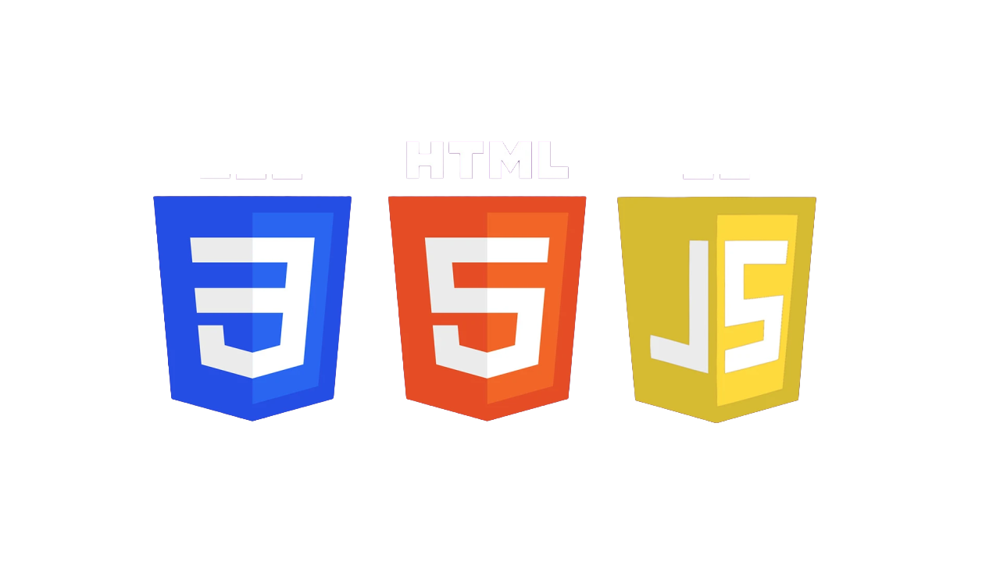

Sobre
Este site nasceu da união de duas grandes paixões: a música e a tecnologia. Mais do que uma homenagem ao lendário álbum Ten da banda Pearl Jam, esta página tem um propósito estritamente educacional.
Um Laboratório de Desenvolvimento Fullstack
Sou um desenvolvedor em formação contínua, e este projeto funciona como um laboratório prático para aprimorar minhas habilidades em Desenvolvimento Web Fullstack. Todo o código que você vê e interage aqui — desde a estruturação em HTML semântico, a estilização e responsividade com CSS, até as lógicas de interação e acessibilidade — foi escrito como parte da minha jornada de estudos. O objetivo é aplicar na prática os conceitos de usabilidade (UI/UX), boas práticas de programação e adaptação para dispositivos móveis.
Aviso de Direitos Autorais e Uso Não Comercial
É de extrema importância ressaltar que este é um projeto 100% sem fins lucrativos.
Todo o material audiovisual (músicas, clipes, imagens e logotipos) utilizado nesta página é de propriedade exclusiva do Pearl Jam, de seus compositores e da gravadora responsável (Epic Records).
Este site não incentiva, de forma alguma, a pirataria, o download ilegal ou a cópia não autorizada de obras protegidas.
O uso desses recursos midiáticos se enquadra apenas como "uso justo" (fair use) para fins de estudo, demonstração de portfólio e experimentação técnica em programação. Se você gosta do som, apoie a banda ouvindo em plataformas oficiais de streaming ou adquirindo seus materiais oficiais.
Este projeto é um reflexo do meu respeito pela arte e da minha dedicação em criar experiências digitais cada vez melhores. Se você é recrutador, desenvolvedor ou apenas um fã de tecnologia, sinta-se à vontade para explorar o código e acompanhar a minha evolução.
Confira esse e outros projetos no meu GitHub.